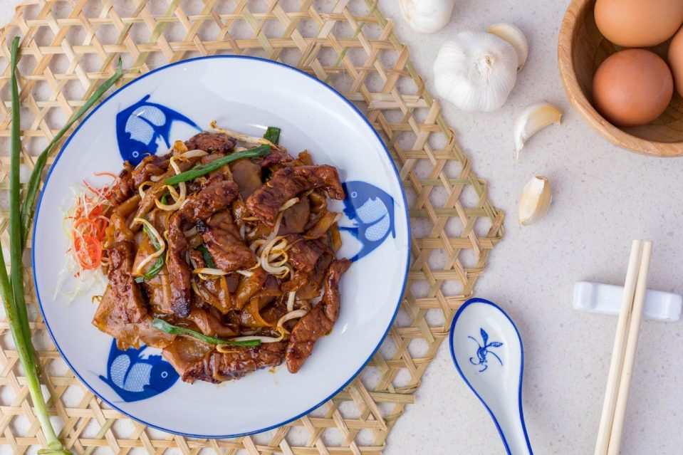

Beef Hor Fun
A crowd pleaser at your local tze char stall, satisfy your cravings with
this easy rice noodle recipe!

Ingredients |
Preperation Time: 10 mins
Cooking Time: 10 mins
|
- 200 g beef fillet (sliced across the grain)
- 300 g kway teow
- 2 stalks spring onion (cut into 4 cm lengths)
- 100 g bean sprouts
- 3 cloves garlic (minced)
- ½ yellow onion (sliced)
- 1 tbsp ginger juice
- 6 tbsp light soy sauce
- 2 tbsp dark soy sauce
- 1 TBsp Oyster Sauce
- 1 tsp seasame oil
- 1 Tsp white pepper
- 1 TBsp cornstarch
- vegetable Oil
|
Instructions
Preparation Method
- To get ginger juice, blend 1 to 2 inch ginger and strain juice
-
In a bowl, combine beef, 2 tbsp light soy sauce, 1 tbsp dark soy sauce,
ginger juice, 1 tsp white pepper powder, 1 tbsp cornstarch and 1 tbsp
vegetable oil. Set aside until needed.
Cooking Method
-
Sear beef slices In a pan on high heat, heat 3 tbsp vegetable oil and
sear beef slices for 2 minutes. Remove from pan and set aside.
-
Stir-fry garlic and onions In the same pan on high heat, heat another 4
tbsp vegetable oil and stir-fry garlic and onions for 2 minutes until
fragrant.
-
Add noodles, 4 tbsp light soy sauce, 1 Tbsp dark soy sauce, 2 Tbsp
oyster sauce and 1 tsp sesame oil to the pan, stir-frying for 2 minutes.
| Be sure to constantly stir while frying the noodles or it will get
burnt and lumpy.
-
In the same pan, toss in beef, bean sprouts and spring onions. Continue
stir-frying another 2 minutes, until spring onions softens. | Substitute
beef slices for any seafood of your choice such as prawns and squid.
-
Toss in the bean sprouts and spring onions until they start to wilt.
- Transfer to a dish and garnish with some cut chilli (optional).
NOTES
*Sauté pan: If you happen to own a nonstick or cast-iron pan, I would
recommend it for this recipe. But that said, any pan that you have can
work — you may just have to be a bit more vigilant with stirring so that
the rice and eggs don’t stick.